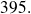
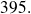

Numerical investigation of a turbulent flow submitted to a high temperature gradient
Solar Paces 2008
Strong temperature variations that appear in high temperature solar receivers induce significant changes to fluid properties. In order to understand the impact of thermal gradients, we perform numerical simulations on a turbulent channel flow with fixed wall temperatures. The numerical simulations are performed for two different turbulent Reynolds numbers depending on the setting:
 and

and

We performed simulations using Fluent software in order to check the abilities and limits of thermal Reynolds Averaged Navier-Stokes (RANS) models using a commercial code. The results on the mean velocity and the temperature fields are compared to direct numerical simulation (DNS) of published data. We find a good match using the ReNormalization Groups (RNG)
 -
model and Reynolds Stress model (RSM) with enhanced wall treatment for the isothermal case. At the opposite, Fluent fails to simulate the temperature effect on the fluid properties and the induced effect on the velocity for the non-isothermal cases with weak and strong temperature gradients. Our results show that the difference between Fluent results and literature data increases with the temperature gradient.
-
model and Reynolds Stress model (RSM) with enhanced wall treatment for the isothermal case. At the opposite, Fluent fails to simulate the temperature effect on the fluid properties and the induced effect on the velocity for the non-isothermal cases with weak and strong temperature gradients. Our results show that the difference between Fluent results and literature data increases with the temperature gradient.
We inferred from this study that we needed to use more precise turbulence and thermal models like Thermal Large Eddy Simulation (TLES) with some alternate Computational Fluid Dynamics (CFD) code. We used the Trio_U code developed by the Grenoble laboratory of the French atomic agency (CEA). We consider low Mach number equations and carry out TLES. These equations permit to take into account the compressible effects due to the temperature (without considering the effects due to the velocity). Furthermore, the conductivity and viscosity vary with the temperature according to Sutherland law.
These LES simulations are validated by comparisons with DNS data for both the isothermal and non-isothermal cases. The thermal subgrid-scale modeling was also studied. A first analysis of the temperature gradient effects shows that a dissymmetry appears in the mean velocity and temperature profiles. It also points out a strong effect on the turbulent parts.